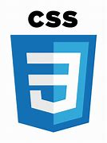

Mes Compétences
La plupart de mes compétences je l'ai developper en auto didacte c'est-a-dire par moi même sur internet grâce à des sites comme Openclassroms. J'ai la capacité de concevoir des sites internet avec l'utilisation de certains logiciels
Logiciels IDE
- 
Mon Expérience
Mes Etudes
- 2021-2022 1°er année BTS SIO
- 2020-2021 Entry 3 English/Maths/IT
- 2020- Baccalauréat Géneral Scientifique spécialité Sciences de La Vie et de la Terre
Mes Loisirs
Le football m'est indispensable dans ma vie et ça depuis que je suis petite. Actuellement, joue au foot au moins 2 fois par semaines. Souvent, ça m'arrive de faire de la boxe pour décompresser.